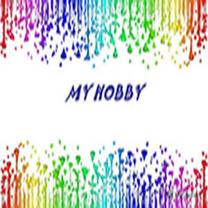

HOBY

Hobi? apa itu hobi? sesuatu yang sebenarnya tak perlu ditanyakan karena setiap orang tentu memilikinya.
Namun tak ada salahnya saya di sini akan sedikit berbicara mengenai Hobi atau kegemaran. Oke deh, langsung saja saya mulai dari pengertian hobi.
Banyak orang mengartikan apa itu hobi. Pada dasarnya hobi adalah sesuatu yang disenangi dan kerap sekali dilakukan.
JIka membicarakan tentang hobi saya, hobi saya adalah bermain game, Mebongkar PC dan mencari apa penyebab masalah pada pc tersebut.
Saya sangat senang dengan hobi game saya, karena itu dapat menghilangkan beban pikiran setelah kuliah dan kerja saya.
Tujuan hobi adalah untuk memenuhi keinginan dan mendapatakan kesenangan . Terdapat berbagai macam jenis hobi seperti mengumpulan sesuatu (Koleksi),
membuat, memperbaiki, bermain dan pendidikan dewasa. Hobi mampu mengisi waktu luang seseorang yang kosong dengan melakukan kegitan Hobi yang dia senangi.
Hobi juga mampu membuat seseorang mengenali bagaiman diri seseorang tersebut.
itu saja penjelasan tentang hobi saya... Terima kasih...